A user-centred media architecture thesis exploring how fragmented urban spaces can feel more connected, memorable, and human.
This project became my way of bringing together architecture, UX research, and interaction design. Set around Kurilpa Bridge in Brisbane, it looks at how small moments of light, sound, and participation can shift a place from being just a route into something people notice, remember, and quietly share.
ToolsQualtrics, Google Colab, HTML, CSS, JavaScript, physical prototyping, light-and-sound interaction
Overview
This thesis looks at urban fragmentation through everyday experience. I focused on Kurilpa Bridge in Brisbane because it is physically well connected, but people often use it as a crossing rather than a place to pause or connect.
Using a Research through Design approach, I moved from site observations and interviews into concept development, prototyping, and evaluation. The final prototype, Residues of Passage, uses light, sound, and anonymous audio traces to make passing experiences feel more visible over time.
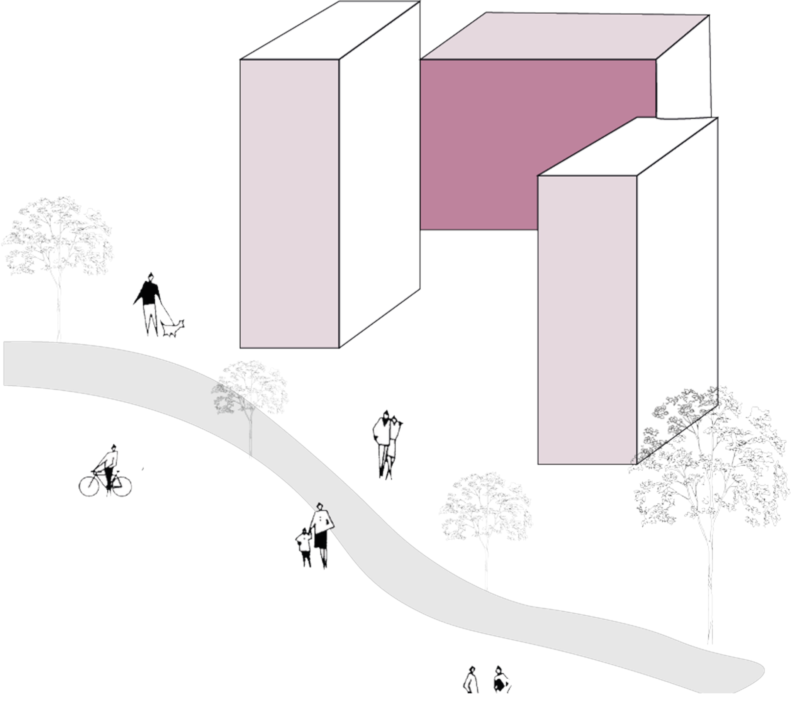
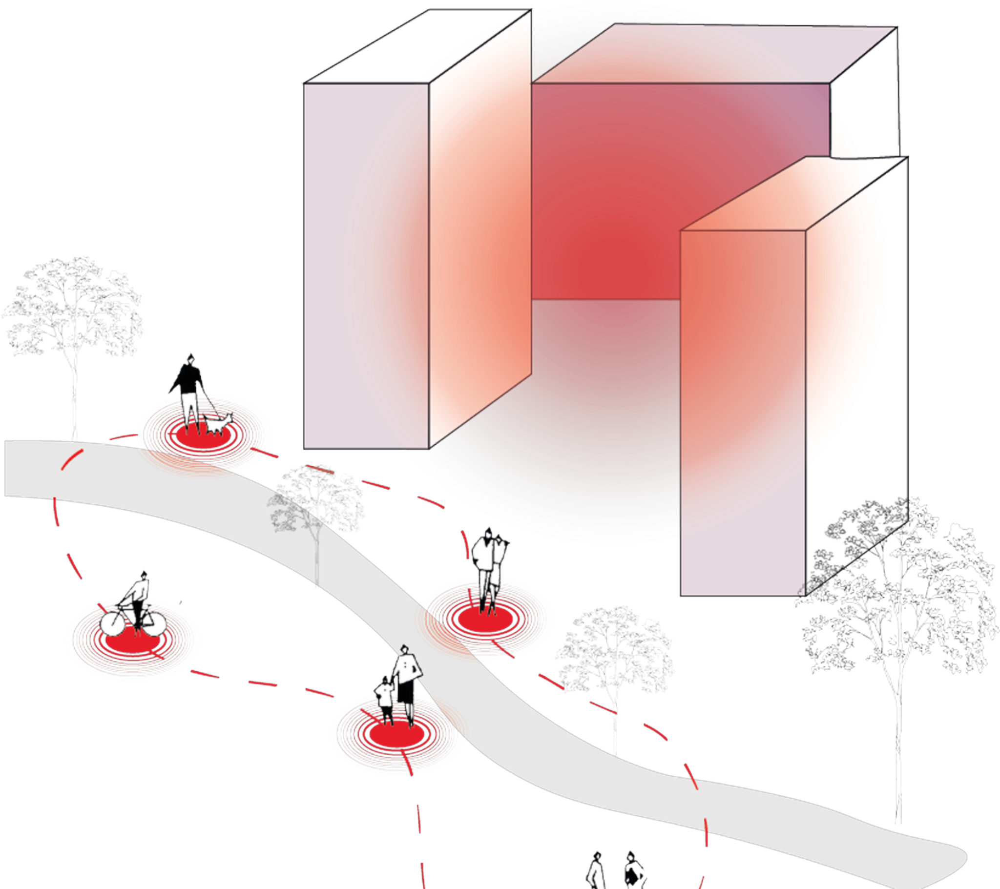
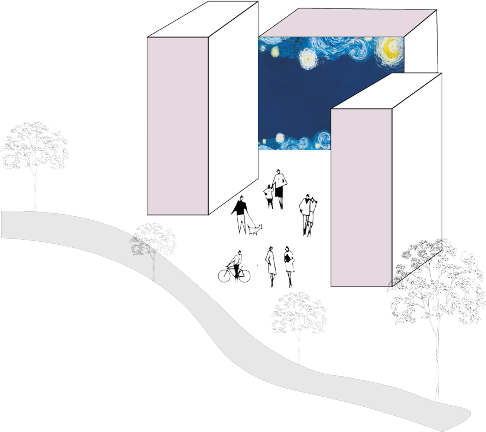
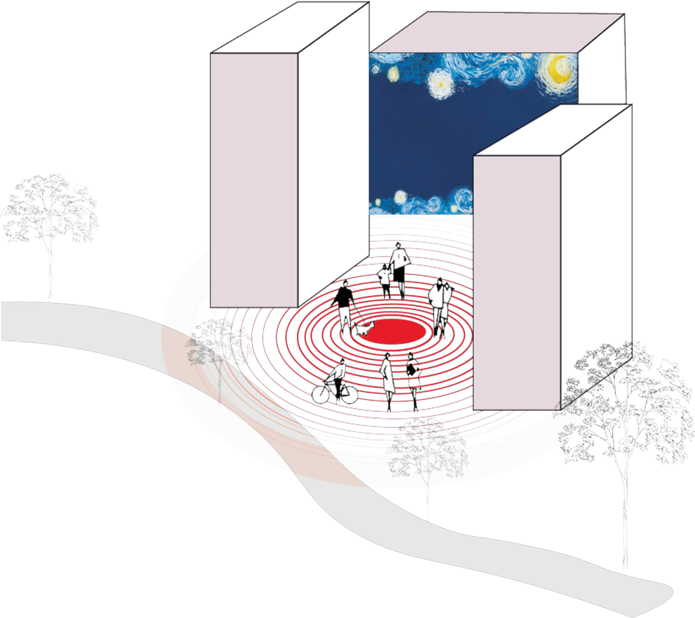
Challenge
The challenge was to design for a space that people already move through quickly. I did not want to force people to stop or turn the bridge into a spectacle. The aim was to create a small, low-pressure invitation that could sit within the existing rhythm of the site.
That shaped the project direction: subtle, site-responsive, and easy to approach. The interaction had to feel calm enough for a public space, but meaningful enough to suggest that someone else had been there before.
Research & Insight
I began with contextual inquiry at Kurilpa Bridge, combining site observation, behavioural mapping, proxemic thinking, and short interviews. I paid attention to movement, pause points, sensory qualities, and the small behaviours that often get missed in public-space research.
The clearest insight was that the bridge is not empty. People notice the view, wind, light, and other passers-by, but usually only briefly. The opportunity was to work with those small moments instead of trying to redesign the whole place.
The opportunity was not to make the bridge a destination. It was to gently amplify the traces of presence already moving through it.
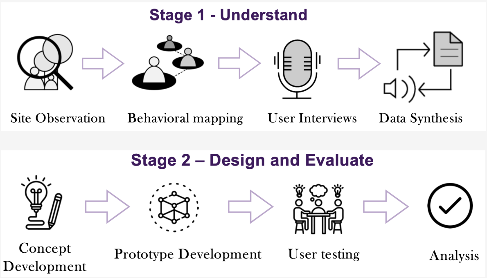
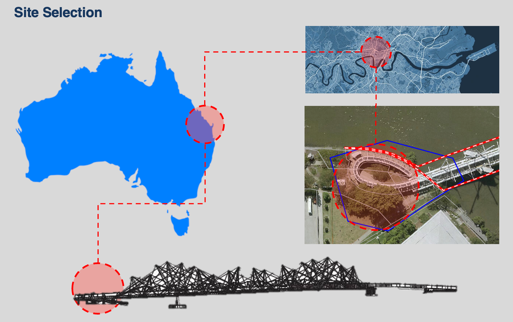
Concept Development — Residues of Passage
Residues of Passage turns the research into a light-and-sound prototype. The idea is simple: people can encounter short audio traces left by others, and optionally leave their own trace behind.
The prototype takes the form of a glowing orb. It is designed for short, public encounters: notice the glow, come closer, listen, and decide whether to contribute. Nothing is forced.
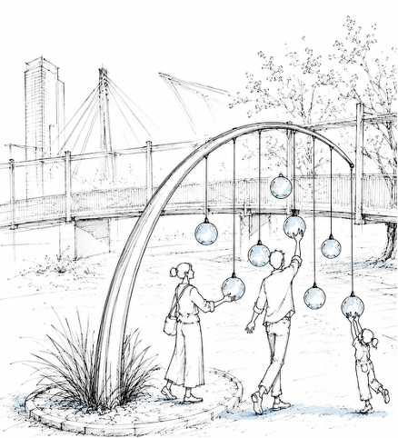
Interaction Design
The interaction is intentionally simple. A person hears a trace from someone who is not physically there, but still feels present through sound and light.
I liked that this created a quieter form of participation. It does not ask strangers to perform or speak to each other directly; it simply lets small contributions build a shared atmosphere over time.
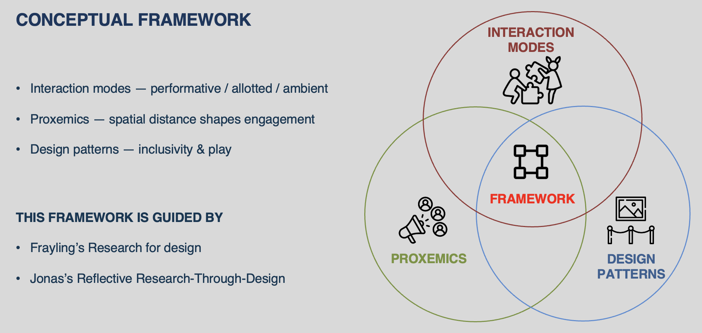
Image Placeholder — Interaction Flow / User Journey
Prototype Development
The prototype brought together the orb form, responsive light, audio playback, and a QR-based contribution pathway. It was built as a research artefact, not a final public installation, so I could test the idea and learn what needed to be clearer.
The build helped me understand both the promise and the limits of the concept. Future development would need to consider durability, weatherproofing, privacy, moderation, accessibility, and how people would understand the contribution process in a real public setting.
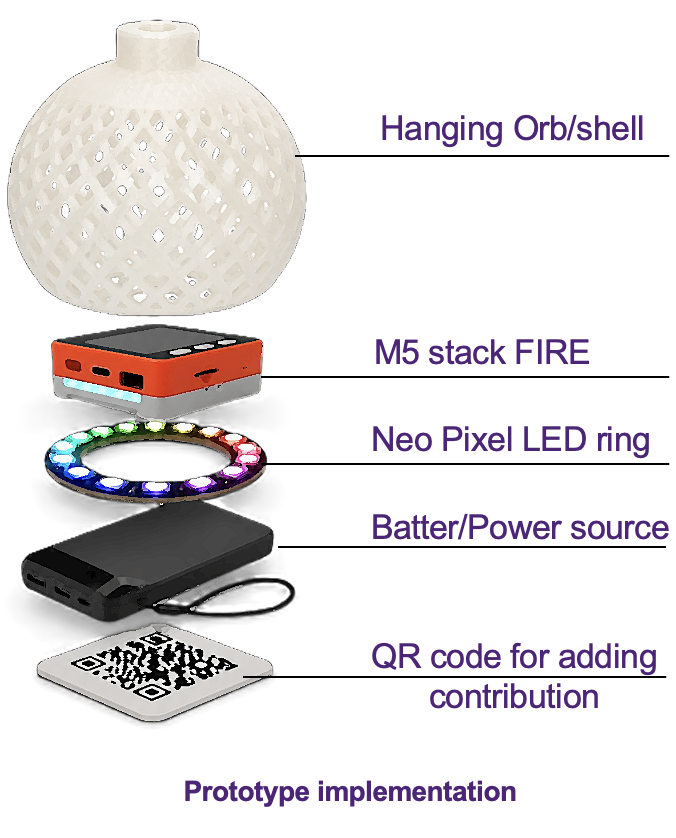
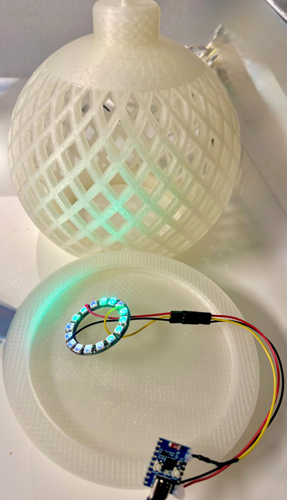
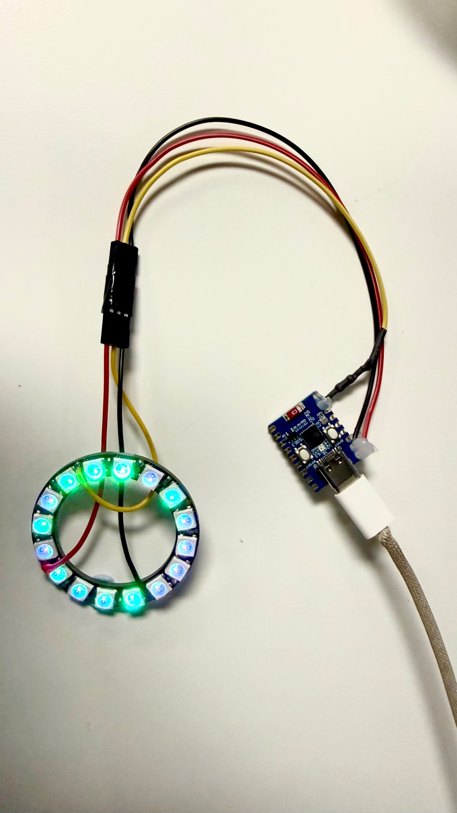
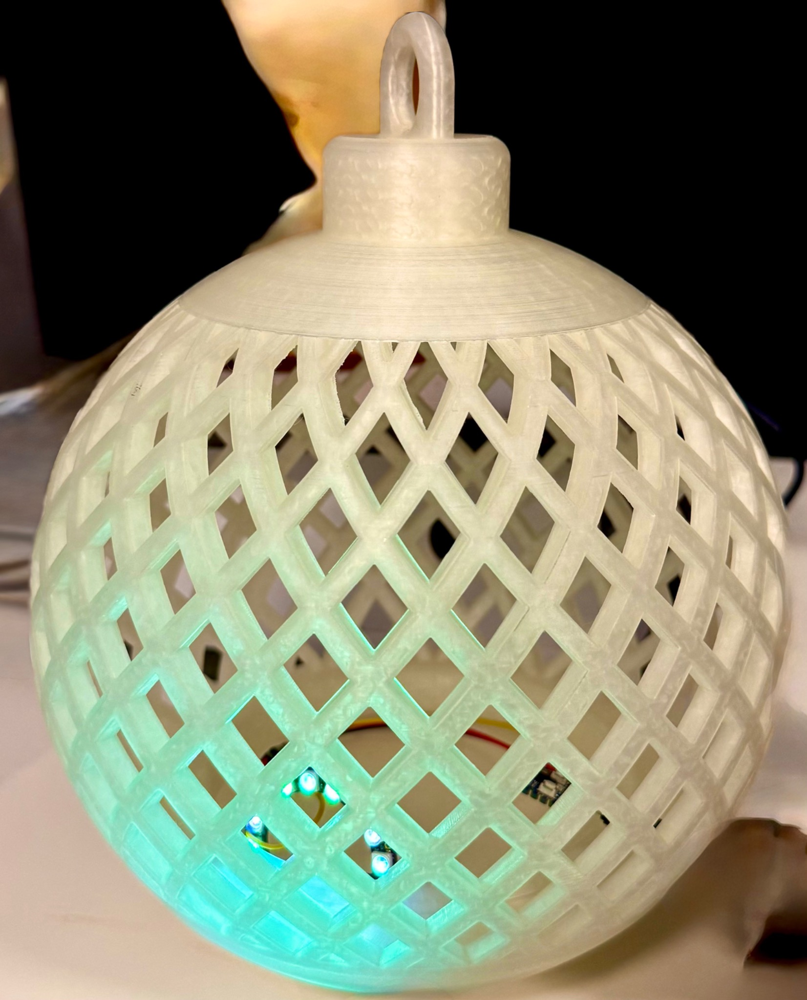
Evaluation & Findings
I evaluated the prototype through a small mixed-method study using a short survey, design discussions, and observation notes. I focused on how people approached the object, what felt clear, and what made the interaction meaningful.
People were drawn to the object and the light first. The audio became meaningful when they realised it represented another person’s trace. That finding was important because it showed that the social meaning needed to be made clear without over-explaining it.
Outcome
This project showed me how media architecture can work best when it respects the pace and character of a place. Residues of Passage is not about making a bridge busier or louder; it is about making small traces of presence easier to notice.
The final thesis brings together spatial research, interaction clarity, sensory engagement, participation, and practical deployment considerations into a user-centred media architecture framework.